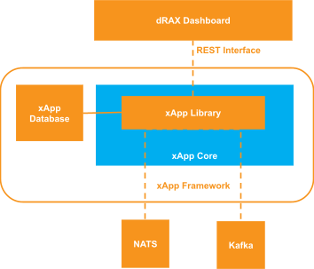

1. xApp Framework In-depth¶
To accelerate the development of xApps, Firecell provides the xApp Framework. For System Release 5.0.0.0, use xapp-framework-package version 6.1.0. The installable package is named xapp-lib and the library source is under xapp_sdk/xapp_lib/, imported as:
from xapp_lib import xapp_lib, actions
The library lives under xapp_sdk/xapp_lib/ and examples are in core/xapp_main.py.
The xApp Library also contains functionality that allows xApps to be developed using the Python AsyncIO framework, which can be more appropriate for applications that are event driven. The Async API has important differences from the synchronous API and is covered in the xApp Async Library In-depth section.
The 6.1.0 repository has no example/ directory. Its reusable template is laid out at the repository root:
core/xapp_main.py,core/xapp_async_main.py,core/restapi.py, andcore/xapp_metadata.jsonconfig/for generated runtime configuration- root
Dockerfile,Dockerfile.dev,README.md, andrequirements.txt helm_chart/xapp/for the template Helm chart
The xapp_config.json and xapp_endpoints.json files are created by the xApp Helm Chart and stored in config/. More information is in xApp Configuration In-depth.
The xApp Framework consists of the following components, which are shown below:
- The xApp Library - a Python library which interfaces with the Firecell RIC platform
- The xApp Database - Redis server for storage of configuration data
- The xApp Core - the core logic of the xApp written by the developer
- The xApp Helm Chart - a Helm Chart used to deploy the xApp and integrate it with Firecell RIC

The xApp framework is built using a microservice oriented architecture. The xApp Database and the xApp Core are Docker images, which are deployed using a Helm Chart, and orchestrated via Kubernetes. The xApp Database is used to store the configuration of the xApp, and can be used by the developer to store other data. The xApp Core is a container that includes the xApp Library. The xApp Library is a Python library that is the main part of the xApp Framework. The xApp Library is created in a way that abstracts how the xApp interfaces with the Firecell RIC. Different hooks are pre-built, such as the connections to the Databuses (NATS, Kafka), the API endpoints for communication to Firecell RIC SMO layer (Dashboard), methods to send commands (handover, sub-band masking), etc. These methods abstract the lower level details (such as URLs, ports, generating protobuf command messages, etc.) so that the developer does not need to worry about them, and can focus on the functionality and algorithms they are implementing.